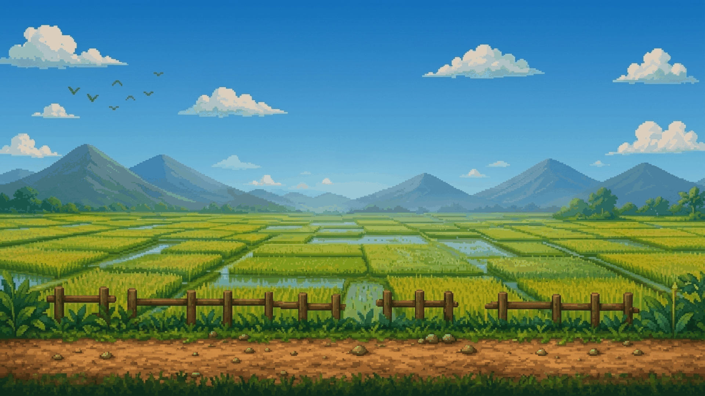
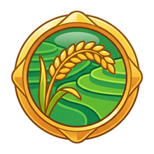
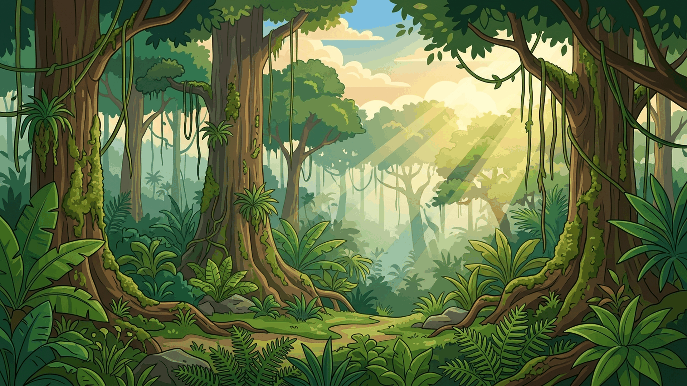
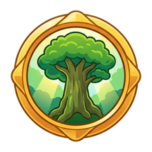
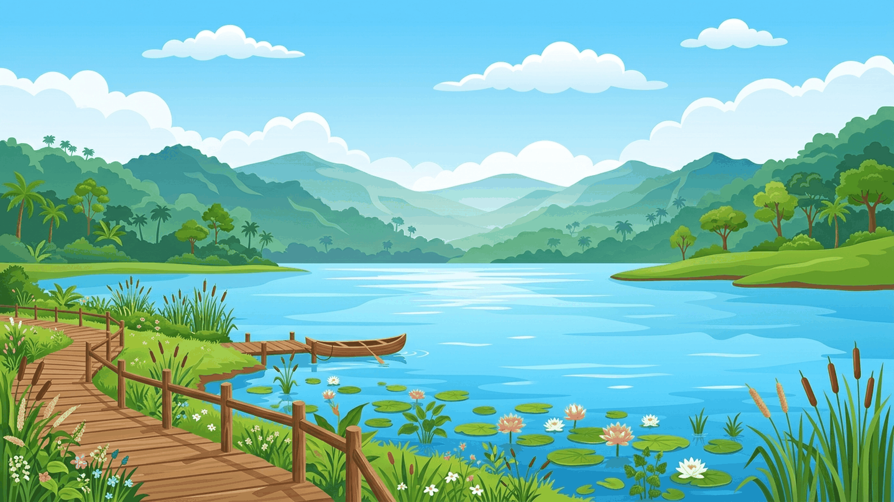
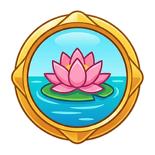
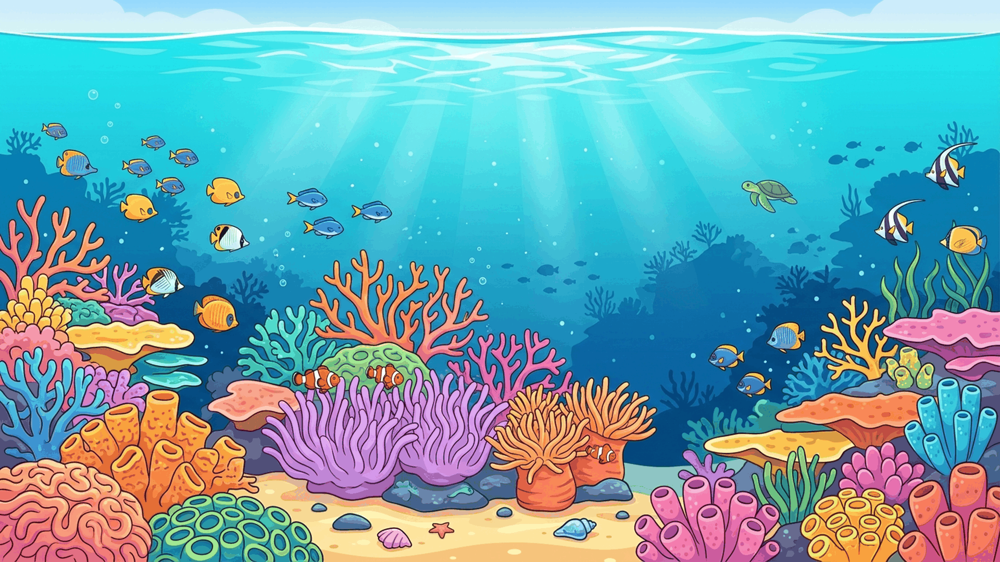
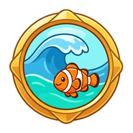

Multimedia Interaktif Berbasis Simulasi Sains IPAS Fase C pada Materi Hubungan Kausalitas Rantai Makanan 4 Bioma Nusantara untuk Siswa Kelas V SDN Percobaan 2 Malang di Layar Sentuh IFP.


Lahan persawahan padi tempat interaksi petani, hama pengerat, dan pemangsa alami.


Rimba hujan tropis rumah bagi Harimau Sumatera, kawanan rusa, dan kanopi pohon raksasa.


Aliran air tawar tempat hidup ikan gabus, teratai mekar, keong air, dan burung bangau.


Pusat keanekaragaman samudra dengan terumbu karang warna-warni, penyu, dan ikan hiu.
Simulasi dirancang dengan model partisipasi bergilir (Turn-Based) untuk 5 tim spesialis dengan durasi bermain terukur 6 hingga 8 menit:
Menjembatani kesenjangan siswa yang mudah menghafal definisi (C1), namun kesulitan memahami hubungan kausalitas (C2):
Menghilangkan miskonsepsi dekomposer sebagai teks pasif di buku teks sains melalui interaktivitas langsung:
Aplikasi game dan portal riset ini dibangun dengan mematuhi karakteristik ergonomis dan operasional layar sentuh di ruang kelas 5A SDN Percobaan 2 Malang: